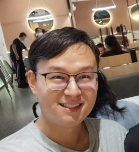

|
 |
Chao Fan 樊超
Ph.D candidate in CS SUSTech, Shenzhen, China 12131100 at mail dot sustech dot edu dot cn |
|
I major in Computer Vision and Deep Learning, and have published several papers about Gait Recognition on top venues like CVPR, ECCV, and T-PAMI (8 in total).
|
Selected Works (* Equal Contribution)
|
Learning Gait Representation from Massive Unlabelled Walking Videos: A Benchmark |
||
|
OpenGait: Revisiting Gait Recognition Toward Better Practicality |
||
|
BigGait: Learning Gait Representation You Want by Large Vision Models |
||
|
GaitEditer: Attribute Editing for Gait Representation Learning |
Activities
Reviewer: CVPR, ICCV, ECCV, NeurIPS, ICLR, ICML, and T-PAMI
Remote Visiting Scholar at Michigan State University: Work on BigGait under the Supervision of Prof. Xiaoming Liu
Invited Talk: Progress in Gait Recognition (2024-03-15) : Video (in Chinese) , Slides (in English)
Awards
China Undergraduate Mathematical Contest in Modeling (CUMCM 2016): First Prize
China National Scholarship for Doctoral Students (2023): First Prize